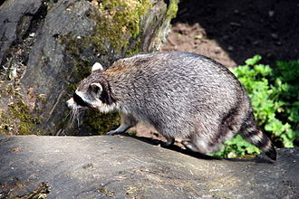

The raccoon (genus Procyon) is a mammal belonging to the order Carnivora and the family Procyonidae. It is native to North America.One of the raccoon's distinctive features is the keratinized layer on its forepaws, which sometimes needs to be softened in water to enhance tactile sensitivity. This behavior makes it appear as if the raccoon is washing its food or objects, which is why it is commonly called "raccoon" (meaning "washing bear" in some languages).
The raccoon is a nocturnal and omnivorous animal, feeding on fruits, insects, bird eggs, and small animals. Although originally a wild animal, raccoons have adapted remarkably well to urban environments, with some populations establishing themselves in cities. Those living near human settlements often sneak into homes to steal food, and due to the black markings around their eyes, they are sometimes referred to as "panda thief" (panda thief).
Raccoons mate in January or February, and after a gestation period of around 63 days, they give birth to four to five cubs in April or May, depending on weather conditions. They typically nest in tree hollows, burrows, or caves. By late summer, the young raccoons are weaned and begin independent life.Raccoons do not hibernate, but during extremely cold winters, they will stay hidden for extended periods. In the wild, raccoons generally live a few years, with the longest recorded lifespan reaching 12 years.
Raccoons have poor eyesight and rely heavily on their sense of touch to explore their surroundings. Their front paws are covered in a keratinized layer, which they often soak in water to soften and increase sensitivity. This behavior makes it appear as if they are washing their food or objects, which is one of their most recognizable traits.
← Back